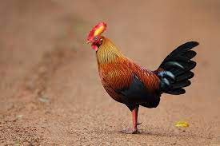
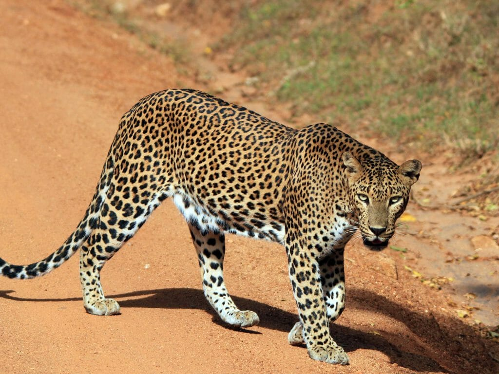

Sri Lanka Indigenous Animals
Sri Lankan Jungle Fowl
The male Sri Lankan junglefowl is larger with vivid plumage, orange-red body, and exaggerated wattle and comb. The female has dull brown plumage for camouflage. They are primarily terrestrial, foraging for food and roosting in trees at night.
Srilankan elephant

The purple-faced langur, endemic to Sri Lanka, is a long-tailed arboreal species with mostly brown appearance and a shy nature. Active during the day, they live in groups and are very vocal, using various calls for communication. Loud calls are used for defense, attracting mates, and territorial battles.
Srilanka blue Magpie

The Sri Lanka blue magpie is known for its bright blue plumage, reddish-brown head, and vibrant red bill, legs, and eye ring. Despite avoiding human-disturbed habitats, it tolerates human presence and is attracted to it. They are omnivorous, eating fruit, nectar, and insects.
Leopard
The Sri Lankan leopard is a large and powerful cat, known for its distinctive golden-yellow coat covered in dark rosettes. It has a robust build and is slightly smaller than some other leopard subspecies.
Srilankan Hill myna

The Hill Myna is endemic to Sri Lanka, meaning it is found only in this region and nowhere else in the wild. They are typically found in various habitats, including forests and cultivated areas.